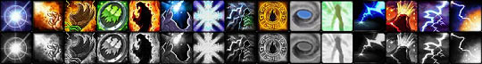
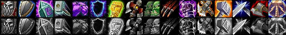
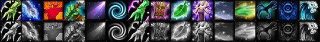
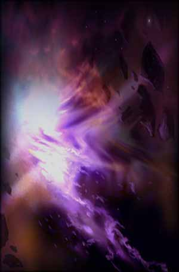
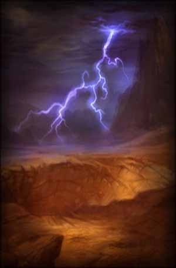
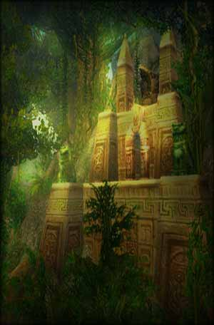

<html>
<head>
<script>
var _
var data=[]
data.n=6
_=data[0]=[]
_.n="Elemental"
_=data[0][0]=[2]
_.n="Convection"
_.d="Reduces the Mana cost of your Shock, Lightning Bolt and Chain Lightning spells by $%."
_.m=5
_.x=2
_.y=0
_=data[0][1]=[1]
_.n="Concussion"
_.d="Increases the damage done by your Shock, Lightning Bolt and Chain Lightning spells by $%."
_.m=5
_.x=3
_.y=0
_=data[0][2]=[25,10]
_.n="Earth's Grasp"
_.d="Increases the Health of your Stoneclaw Totem by $% and the radius of your Earthbind Totem by $%."
_.m=2
_.x=1
_.y=5
_=data[0][3]=[[4,7,10]]
_.n="Elemental Warding"
_.d="Reduces damage taken from Fire, Frost and Nature effects by $%."
_.m=3
_.x=2
_.y=5
_=data[0][4]=[5]
_.n="Call of Flame"
_.d="Increases the damage done by your Fire Totems by $%."
_.m=3
_.x=3
_.y=5
_=data[0][5]=[]
_.n="Elemental Focus"
_.d="Gives you a 10% chance to enter a Clearcasting state after casting any Fire, Frost, or Nature damage spell. The Clearcasting state reduces the Mana cost of your next damage spell by 100%."
_.m=1
_.x=1
_.y=10
_=data[0][6]=[0.2]
_.n="Reverberation"
_.d="Reduces the cooldown of your Shock spells by $ sec."
_.m=5
_.x=2
_.y=10
_=data[0][7]=[[1,2,3,4,6]]
_.n="Call of Thunder"
_.d="Increases the critical strike chance of your Lightning Bolt and Chain Lightning spells by $%."
_.m=5
_.x=3
_.y=10
_=data[0][8]=[1,25]
_.n="Improved Fire Totems"
_.d="Reduces the delay before your Fire Nova Totem activates by $ sec and decreases the threat generated by your Magma Totem by $%"
_.m=2
_.x=1
_.y=15
_=data[0][9]=[[33,66,100]]
_.n="Eye of the Storm"
_.d="Gives you a $% chance to gain the Focused Casting effect that lasts for 6 sec after being the victim of a melee or ranged critical strike. The Focused Casting effect prevents you from losing casting time when taking damage."
_.m=3
_.x=2
_.y=15
_=data[0][10]=[3]
_.n="Elemental Devastation"
_.d="Your offensive spell crits will increase your chance to get a critical strike with melee attacks by $% for 10 sec."
_.m=3
_.x=4
_.y=15
_=data[0][11]=[3]
_.n="Storm Reach"
_.d="Increases the range of your Lightning Bolt and Chain Lightning spells by $ yards."
_.m=2
_.x=1
_.y=20
_=data[0][12]=[]
_.n="Elemental Fury"
_.d="Increases the critical strike damage bonus of your Searing, Magma, and Fire Nova Totems and your Fire, Frost, and Nature spells by 100%."
_.m=1
_.x=2
_.y=20
_=data[0][13]=[0.2]
_.n="Lightning Mastery"
_.d="Reduces the cast time of your Lightning Bolt and Chain Lightning spells by $ sec."
_.m=5
_.x=3
_.y=25
_.r=[7,5]
_=data[0][14]=[]
_.n="Elemental Mastery"
_.d="When activated, this spell gives your next Fire, Frost, or Nature damage spell a 100% critical strike chance and reduces the Mana cost by 100%."
_.m=1
_.x=2
_.y=30
_.r=[12,1]
_.t=['Instant','3 min cooldown']
_=data[1]=[]
_.n="Enhancement"
_=data[1][0]=[1]
_.n="Ancestral Knowledge"
_.d="Increases your maximum Mana by $%."
_.m=5
_.x=2
_.y=0
_=data[1][1]=[1,5]
_.n="Shield Specialization"
_.d="Increases your chance to block attacks with a shield by $% and increases the amount blocked by $%."
_.m=5
_.x=3
_.y=0
_=data[1][2]=[10,1]
_.n="Guardian Totems"
_.d="Increases the amount of damage reduced by your Stoneskin Totem and Windwall Totem by $% and reduces the cooldown of your Grounding Totem by $ sec."
_.m=2
_.x=1
_.y=5
_=data[1][3]=[1]
_.n="Thundering Strikes"
_.d="Improves your chance to get a critical strike with your weapon attacks by $%."
_.m=5
_.x=2
_.y=5
_=data[1][4]=[1]
_.n="Improved Ghost Wolf"
_.d="Reduces the cast time of your Ghost Wolf spell by $ sec."
_.m=2
_.x=3
_.y=5
_=data[1][5]=[5]
_.n="Improved Lightning Shield"
_.d="Increases the damage done by your Lightning Shield orbs by $%."
_.m=3
_.x=4
_.y=5
_=data[1][6]=[[8,15]]
_.n="Enhancing Totems"
_.d="Increases the effect of your Strength of Earth and Grace of Air Totems by $%"
_.m=2
_.x=1
_.y=10
_=data[1][7]=[]
_.n="Two-Handed Axes and Maces"
_.d="Allows you to use Two-Handed Axes and Two-Handed Maces."
_.m=1
_.x=3
_.y=10
_=data[1][8]=[1]
_.n="Anticipation"
_.d="Increases your Dodge chance by $%."
_.m=5
_.x=4
_.y=10
_=data[1][9]=[[10,15,20,25,30]]
_.n="Flurry"
_.d="Increases your attack speed by $% for your next 3 swings after dealing a critical strike."
_.m=5
_.x=2
_.y=15
_.r=[3,5]
_=data[1][10]=[2]
_.n="Toughness"
_.d="Increases your armor value from items by $%."
_.m=5
_.x=3
_.y=15
_=data[1][11]=[15,6]
_.n="Improved Weapon Totems"
_.d="Increases the melee attack power bonus of your Windfury Totem by $% and increases the damage of your Flametongue Totem by $%."
_.m=2
_.x=1
_.y=20
_=data[1][12]=[[7,14,20],[13,27,40],5]
_.n="Elemental Weapons"
_.d="Increases the attack power bonus of your Rockbiter Weapon by $%, your Windfury Weapon by $% and increases the damage caused by your Flametongue Weapon and Frostbrand Weapon by $%."
_.m=3
_.x=2
_.y=20
_=data[1][13]=[]
_.n="Parry"
_.d="Gives a chance to parry enemy melee attacks."
_.m=1
_.x=3
_.y=20
_=data[1][14]=[2]
_.n="Weapon Mastery"
_.d="Increases the damage you deal with all weapons by $%."
_.m=5
_.x=3
_.y=25
_=data[1][15]=[]
_.n="Stormstrike"
_.d="Gives you an extra attack. In addition, the next 2 sources of Nature damage dealt to the target are increased by 20%. Lasts 12 sec."
_.m=1
_.x=2
_.y=30
_.t=['15% of base Mana','6 yd range','Instant cast','20 sec cooldown']
_.r=[12,3]
_=data[2]=[]
_.n="Restoration"
_=data[2][0]=[0.1]
_.n="Improved Healing Wave"
_.d="Reduces the casting time of your Healing Wave spell by $ sec."
_.m=5
_.x=2
_.y=0
_=data[2][1]=[1]
_.n="Tidal Focus"
_.d="Reduces the Mana cost of your healing spells by $%."
_.m=5
_.x=3
_.y=0
_=data[2][2]=[10,10]
_.n="Improved Reincarnation"
_.d="Reduces the cooldown of your Reincarnation spell by $ min and increases the amount of Health and Mana you reincarnate with by an additional $%."
_.m=2
_.x=1
_.y=5
_=data[2][3]=[[8,16,25]]
_.n="Ancestral Healing"
_.d="Increases your target's armor value from items by $% for 15 sec after getting a critical effect from one of your healing spells."
_.m=3
_.x=2
_.y=5
_=data[2][4]=[5]
_.n="Totemic Focus"
_.d="Reduces the Mana cost of your totems by $%."
_.m=5
_.x=3
_.y=5
_=data[2][5]=[1]
_.n="Nature's Guidance"
_.d="Increases your chance to hit with melee attacks and spells by $%."
_.m=3
_.x=1
_.y=10
_=data[2][6]=[14]
_.n="Healing Focus"
_.d="Gives you a $% chance to avoid interruption caused by damage while casting any healing spell."
_.m=5
_.x=2
_.y=10
_=data[2][7]=[]
_.n="Totemic Mastery"
_.d="The radius of your totems that affect friendly targets is increased to 30 yd."
_.m=1
_.x=3
_.y=10
_=data[2][8]=[5]
_.n="Healing Grace"
_.d="Reduces the threat generated by your healing spells by $%."
_.m=3
_.x=4
_.y=10
_=data[2][9]=[5]
_.n="Restorative Totems"
_.d="Increases the effect of your Mana Spring and Healing Stream Totems by $%."
_.m=5
_.x=2
_.y=15
_=data[2][10]=[1]
_.n="Tidal Mastery"
_.d="Increases the critical effect chance of your healing and lightning spells by $%."
_.m=5
_.x=3
_.y=15
_=data[2][11]=[[33,66,100]]
_.n="Healing Way"
_.d="Your Healing Wave spells have a $% chance to increase the effect of subsequent Healing Wave spells on the target by 6% for 15 sec. This effect will stack up to 3 times."
_.m=3
_.x=1
_.y=20
_=data[2][12]=[]
_.n="Nature's Swiftness"
_.d="When activated, your next Nature spell with a casting time less than 10 sec becomes an instant cast spell."
_.m=1
_.x=3
_.y=20
_.t=['Instant','3 min cooldown']
_=data[2][13]=[2]
_.n="Purification"
_.d="Increases the effectiveness of your healing spells by $%."
_.m=5
_.x=3
_.y=25
_=data[2][14]=[]
_.n="Mana Tide Totem"
_.d="Summons a Mana Tide Totem with 5 health at the feet of the caster for 12 sec that restores 290 Mana every 3 sec to group members within 20 yards."
_.m=1
_.x=2
_.y=30
_.z=3
_.r=[9,5]
_.t=['Instant cast','5 min cooldown','Tools: Water Totem']
</script>
</head>
<body>
<!--[if lte IE 6]>






<![endif]-->
</body>
</html>